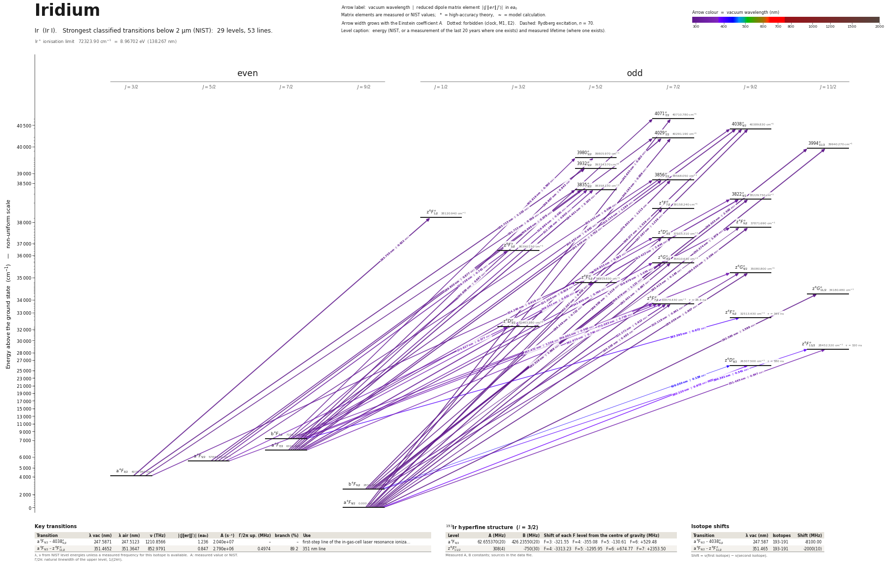

Iridium energy level diagram
Energy levels and transitions of neutral iridium (Ir I): the 53 strongest classified lines below 2 µm from the NIST Atomic Spectra Database and the 29 levels they connect, each line with its vacuum wavelength, frequency and, for 53 of them, the reduced dipole matrix element derived from the NIST transition rate. Measured lifetimes, transition rates, hyperfine constants and isotope shifts from the literature are included, each with its citation.
Hover a line or a level to isolate it, click to keep it selected. Scroll to zoom, drag to move.

Download: diagram (PDF) diagram (SVG) transitions (CSV) levels (CSV) source code

Key transitions of iridium
| Transition | λ vac (nm) | λ air (nm) | ν (THz) | |⟨J‖er‖J′⟩| (ea₀) | A (s⁻¹) | Γ/2π up. (MHz) | branch (%) | Use |
|---|---|---|---|---|---|---|---|---|
| a 4F9/2 – 4038°9/2 | 247.5871 | 247.5123 | 1210.8566 | 1.236 | 2.040e+07 | – | – | first-step line of the in-gas-cell laser resonance ioniza… |
| a 4F9/2 – z 6F°11/2 | 351.4652 | 351.3647 | 852.9791 | 0.847 | 2.790e+06 | 0.4974 | 89.2 | 351 nm line |
λ, ν from NIST level energies unless a measured frequency for this isotope is available. A: measured value or NIST. Γ/2π: natural linewidth of the upper level, 1/(2πτ).
193Ir hyperfine structure (I = 3/2)
| Level | A (MHz) | B (MHz) | Shift of each F level from the centre of gravity (MHz) |
|---|---|---|---|
| a 4F9/2 | 62.655370(20) | 426.23550(20) | F=3: -321.55 F=4: -355.08 F=5: -130.61 F=6: +529.48 |
| z 6F°11/2 | 308(4) | -750(30) | F=4: -3313.23 F=5: -1295.95 F=6: +674.77 F=7: +2353.50 |
Measured A, B constants; sources in the data file.
Isotope shifts
| Transition | λ vac (nm) | Isotopes | Shift (MHz) |
|---|---|---|---|
| a 4F9/2 – 4038°9/2 | 247.587 | 193-191 | -8100.00 |
| a 4F9/2 – z 6F°11/2 | 351.465 | 193-191 | -2000(10) |
Shift = ν(first isotope) − ν(second isotope).
Listed Ir transitions below 2 µm
| Lower level | Upper level | λ vacuum (nm) | λ air (nm) | ν (THz) | Type | |⟨J‖er‖J′⟩| (ea₀) | A (s⁻¹) | Branching (%) | Source of matrix element / A |
|---|---|---|---|---|---|---|---|---|---|
| a 4F9/2 | 4071°7/2 | 245.6352 | 245.5608 | 1220.4785 | E1 | 0.802 NIST | 1.100e+07 NIST | – | NIST ASD (accuracy D) |
| a 4F9/2 | 4038°9/2 | 247.5871 | 247.5123 | 1210.8566 | E1 | 1.236 NIST | 2.040e+07 NIST | – | NIST ASD (accuracy B+) |
| a 4F9/2 | 4029°7/2 | 248.1932 | 248.1183 | 1207.8995 | E1 | 0.886 NIST | 1.300e+07 NIST | – | NIST ASD (accuracy D) |
| a 4F9/2 | 3994°11/2 | 250.3739 | 250.2984 | 1197.3792 | E1 | 1.879 NIST | 3.800e+07 NIST | – | NIST ASD (accuracy B) |
| a 4F9/2 | z 4F°7/2 | 262.0666 | 261.9884 | 1143.9553 | E1 | 0.653 NIST | 6.000e+06 NIST | – | NIST ASD (accuracy D) |
| a 4F9/2 | z 4F°9/2 | 264.0495 | 263.9708 | 1135.3647 | E1 | 2.064 NIST | 4.690e+07 NIST | – | NIST ASD (accuracy A) |
| b 4F9/2 | 4038°9/2 | 266.2772 | 266.1980 | 1125.8661 | E1 | 1.526 NIST | 2.500e+07 NIST | – | NIST ASD (accuracy B+) |
| a 4F9/2 | z 4D°7/2 | 266.5578 | 266.4786 | 1124.6807 | E1 | 1.518 NIST | 3.080e+07 NIST | – | NIST ASD (accuracy B+) |
| b 4F9/2 | 3994°11/2 | 269.5034 | 269.4234 | 1112.3886 | E1 | 2.593 NIST | 5.800e+07 NIST | – | NIST ASD (accuracy B) |
| b 4F9/2 | 3856°7/2 | 279.8528 | 279.7703 | 1071.2505 | E1 | 1.213 NIST | 1.700e+07 NIST | – | NIST ASD (accuracy D) |
| a 4F9/2 | z 6G°7/2 | 282.4011 | 282.3180 | 1061.5840 | E1 (intercombination) | 0.667 NIST | 5.000e+06 NIST | – | NIST ASD (accuracy D) |
| b 4F9/2 | 3822°9/2 | 282.5276 | 282.4445 | 1061.1085 | E1 | 1.668 NIST | 2.500e+07 NIST | – | NIST ASD (accuracy C) |
| a 4F3/2 | 3932°5/2 | 283.7231 | 283.6397 | 1056.6374 | E1 | 1.103 NIST | 1.800e+07 NIST | – | NIST ASD (accuracy D) |
| a 4F9/2 | z 6G°9/2 | 285.0562 | 284.9725 | 1051.6959 | E1 (intercombination) | 1.607 NIST | 2.260e+07 NIST | – | NIST ASD (accuracy B+) |
| b 4F9/2 | z 4F°9/2 | 285.4149 | 285.3311 | 1050.3741 | E1 | 0.148 NIST | 1.900e+05 NIST | – | NIST ASD (accuracy C) |
| b 4F9/2 | z 4D°7/2 | 288.3479 | 288.2633 | 1039.6901 | E1 | 0.722 NIST | 5.500e+06 NIST | – | NIST ASD (accuracy B+) |
| a 4F5/2 | 4029°7/2 | 289.7999 | 289.7150 | 1034.4809 | E1 | 0.877 NIST | 8.000e+06 NIST | – | NIST ASD (accuracy D) |
| a 4F7/2 | 4071°7/2 | 290.8087 | 290.7235 | 1030.8924 | E1 | 0.697 NIST | 5.000e+06 NIST | – | NIST ASD (accuracy D) |
| a 4F3/2 | 3835°5/2 | 291.7222 | 291.6368 | 1027.6643 | E1 | 0.556 NIST | 4.200e+06 NIST | – | NIST ASD (accuracy D) |
| a 4F9/2 | z 6G°11/2 | 292.5646 | 292.4790 | 1024.7050 | E1 (intercombination) | 1.588 NIST | 1.700e+07 NIST | – | NIST ASD (accuracy A+) |
| a 4F7/2 | 4038°9/2 | 293.5485 | 293.4627 | 1021.2706 | E1 | 1.752 NIST | 2.460e+07 NIST | – | NIST ASD (accuracy B+) |
| a 4F3/2 | z 6F°1/2 | 293.7548 | 293.6689 | 1020.5535 | E1 (intercombination) | 0.922 NIST | 3.400e+07 NIST | – | NIST ASD (accuracy D) |
| a 4F7/2 | 4029°7/2 | 294.4010 | 294.3149 | 1018.3134 | E1 | 2.105 NIST | 4.400e+07 NIST | – | NIST ASD (accuracy C) |
| a 4F9/2 | z 6F°7/2 | 295.2079 | 295.1217 | 1015.5299 | E1 (intercombination) | 0.483 NIST | 2.300e+06 NIST | 6.53 | NIST ASD (accuracy C+) |
| a 4F7/2 | 3980°5/2 | 298.6674 | 298.5803 | 1003.7669 | E1 | 0.843 NIST | 9.000e+06 NIST | – | NIST ASD (accuracy D) |
| b 4F7/2 | 4038°9/2 | 300.4517 | 300.3641 | 997.8058 | E1 | 0.982 NIST | 7.200e+06 NIST | – | NIST ASD (accuracy B) |
| a 4F5/2 | 3856°7/2 | 305.0321 | 304.9434 | 982.8225 | E1 | 0.599 NIST | 3.200e+06 NIST | – | NIST ASD (accuracy D) |
| b 4F7/2 | 3980°5/2 | 305.8164 | 305.7275 | 980.3021 | E1 | 0.560 NIST | 3.700e+06 NIST | – | NIST ASD (accuracy D) |
| b 4F9/2 | z 6G°7/2 | 306.9778 | 306.8886 | 976.5934 | E1 (intercombination) | 1.121 NIST | 1.100e+07 NIST | – | NIST ASD (accuracy D) |
| a 4F5/2 | 3835°5/2 | 306.9979 | 306.9087 | 976.5293 | E1 | 0.878 NIST | 9.000e+06 NIST | – | NIST ASD (accuracy D) |
| b 4F9/2 | z 6G°9/2 | 310.1177 | 310.0277 | 966.7054 | E1 (intercombination) | 0.841 NIST | 4.800e+06 NIST | – | NIST ASD (accuracy C+) |
| a 4F7/2 | 3856°7/2 | 310.1339 | 310.0439 | 966.6550 | E1 | 1.284 NIST | 1.400e+07 NIST | – | NIST ASD (accuracy D+) |
| a 4F7/2 | 3835°5/2 | 312.1662 | 312.0757 | 960.3618 | E1 | 0.900 NIST | 9.000e+06 NIST | – | NIST ASD (accuracy D) |
| a 4F7/2 | 3822°9/2 | 313.4222 | 313.3314 | 956.5130 | E1 | 2.644 NIST | 4.600e+07 NIST | – | NIST ASD (accuracy C) |
| a 4F7/2 | z 4F°9/2 | 316.9795 | 316.8878 | 945.7786 | E1 | 1.034 NIST | 6.800e+06 NIST | – | NIST ASD (accuracy B+) |
| b 4F7/2 | 3835°5/2 | 319.9844 | 319.8920 | 936.8970 | E1 | 0.591 NIST | 3.600e+06 NIST | – | NIST ASD (accuracy D) |
| b 4F7/2 | 3822°9/2 | 321.3043 | 321.2115 | 933.0483 | E1 | 0.819 NIST | 4.100e+06 NIST | – | NIST ASD (accuracy D) |
| b 4F9/2 | z 6F°7/2 | 322.1707 | 322.0776 | 930.5393 | E1 (intercombination) | 1.613 NIST | 1.970e+07 NIST | 56 | NIST ASD (accuracy B+) |
| a 4F3/2 | z 6F°5/2 | 324.2449 | 324.1513 | 924.5866 | E1 (intercombination) | 0.619 NIST | 3.800e+06 NIST | – | NIST ASD (accuracy D) |
| a 4F5/2 | z 6F°3/2 | 326.7383 | 326.6442 | 917.5307 | E1 (intercombination) | 0.742 NIST | 8.000e+06 NIST | – | NIST ASD (accuracy D) |
| b 4F7/2 | z 4D°7/2 | 328.8533 | 328.7585 | 911.6299 | E1 | 0.593 NIST | 2.500e+06 NIST | – | NIST ASD (accuracy D) |
| a 4F7/2 | z 6G°7/2 | 343.7995 | 343.7010 | 871.9979 | E1 (intercombination) | 0.760 NIST | 3.600e+06 NIST | – | NIST ASD (accuracy D) |
| a 4F9/2 | z 6F°11/2 | 351.4652 | 351.3647 | 852.9791 | E1 (intercombination) | 0.847 measured | 2.790e+06 measured | 89.2 | Ivarsson, Andersen, Nordstrom, Plez, Johansson, Litzen, Hartman, Hill, Lundberg, Xu, Astr… |
| a 4F5/2 | z 6F°7/2 | 356.0010 | 355.8993 | 842.1113 | E1 (intercombination) | 0.595 NIST | 1.990e+06 NIST | 5.65 | NIST ASD (accuracy B) |
| b 4F7/2 | z 6G°9/2 | 357.4724 | 357.3703 | 838.6451 | E1 (intercombination) | 1.256 NIST | 7.000e+06 NIST | – | NIST ASD (accuracy B+) |
| b 4F7/2 | z 6F°5/2 | 359.5413 | 359.4387 | 833.8194 | E1 (intercombination) | 0.632 NIST | 2.900e+06 NIST | – | NIST ASD (accuracy D) |
| a 4F7/2 | z 6F°7/2 | 362.9696 | 362.8661 | 825.9438 | E1 (intercombination) | 0.740 NIST | 2.900e+06 NIST | 8.24 | NIST ASD (accuracy B) |
| b 4F7/2 | z 6F°7/2 | 373.5829 | 373.4767 | 802.4791 | E1 (intercombination) | 0.758 NIST | 2.790e+06 NIST | 7.92 | NIST ASD (accuracy B) |
| a 4F5/2 | z 6D°3/2 | 374.8272 | 374.7207 | 799.8151 | E1 (intercombination) | 0.577 NIST | 3.200e+06 NIST | – | NIST ASD (accuracy D) |
| a 4F9/2 | z 6D°9/2 | 380.1197 | 380.0118 | 788.6790 | E1 (intercombination) | 0.673 measured | 1.670e+06 measured | 96.5 | Ivarsson, Andersen, Nordstrom, Plez, Johansson, Litzen, Hartman, Hill, Lundberg, Xu, Astr… |
| b 4F9/2 | z 6F°11/2 | 390.3606 | 390.2500 | 767.9885 | E1 (intercombination) | 0.341 measured | 3.300e+05 measured | 10.7 | Ivarsson, Andersen, Nordstrom, Plez, Johansson, Litzen, Hartman, Hill, Lundberg, Xu, Astr… |
| b 4F7/2 | z 6F°9/2 | 393.5951 | 393.4837 | 761.6773 | E1 (intercombination) | 0.672 NIST | 1.500e+06 NIST | 51.7 | NIST ASD (accuracy D) |
| b 4F9/2 | z 6D°9/2 | 426.0301 | 425.9102 | 703.6884 | E1 (intercombination) | 0.138 measured | 5.000e+04 measured | 3.1 | Ivarsson, Andersen, Nordstrom, Plez, Johansson, Litzen, Hartman, Hill, Lundberg, Xu, Astr… |
Reduced dipole matrix elements follow the convention A = ω³|d|²/(3πε₀ħc³(2J′+1)), with J′ the upper level. Tags show where a number comes from: measured, NIST compilation, high-accuracy theory, or a model calculation.
Ir energy levels
| Level | Energy (cm⁻¹) | J | Parity | Lifetime | gJ | Hyperfine A (MHz) | Hyperfine B (MHz) | Lifetime source | Hyperfine source |
|---|---|---|---|---|---|---|---|---|---|
| a 4F9/2 | 0.000 | 9/2 | even | stable | 1.3 | 62.6554 | 426.236 | – | Buerger et al., Phys. Lett. 140B, 17 (1984) (reference [31] of the citing paper), as quot… |
| b 4F9/2 | 2834.980 | 9/2 | even | – | 1.33 | – | – | – | – |
| a 4F3/2 | 4078.940 | 3/2 | even | – | 1.12 | – | – | – | – |
| a 4F5/2 | 5784.620 | 5/2 | even | – | 1.2 | – | – | – | – |
| a 4F7/2 | 6323.910 | 7/2 | even | – | 1.21 | – | – | – | – |
| b 4F7/2 | 7106.610 | 7/2 | even | – | 1.23 | – | – | – | – |
| z 6D°9/2 | 26307.500 | 9/2 | odd | 580 ns measured | 1.48 | – | – | Gough, Hannaford, Lowe, J. Phys. B 16, 785 (1983), as quoted in Tables 2 and 4 of Ivarsso… | – |
| z 6F°11/2 | 28452.320 | 11/2 | odd | 320 ns measured | 1.4 | 308 | -750 | Ivarsson, Andersen, Nordstrom, Plez, Johansson, Litzen, Hartman, Hill, Lundberg, Xu, Astr… | Verney, Cabaret, Crawford, Duong, Fricke, Genevey, Huber, Ibrahim, Krieg, Le Blanc, et al… |
| z 6D°3/2 | 32463.580 | 3/2 | odd | – | 1.58 | – | – | – | – |
| z 6F°9/2 | 32513.430 | 9/2 | odd | 345 ns measured | 1.36 | – | – | Zhou, Gamrath, Palmeri, Quinet, Zhang, Dai, Astrophys. J. Suppl. Ser. 238, 3 (2018), Tabl… | – |
| z 6F°7/2 | 33874.430 | 7/2 | odd | 28.4 ns measured | 1.38 | – | – | Zhou, Gamrath, Palmeri, Quinet, Zhang, Dai, Astrophys. J. Suppl. Ser. 238, 3 (2018), Tabl… | – |
| z 6G°11/2 | 34180.480 | 11/2 | odd | – | 1.34 | – | – | – | – |
| z 6F°5/2 | 34919.830 | 5/2 | odd | – | 1.34 | – | – | – | – |
| z 6G°9/2 | 35080.800 | 9/2 | odd | – | 1.27 | – | – | – | – |
| z 6G°7/2 | 35410.630 | 7/2 | odd | – | 1.32 | – | – | – | – |
| z 6F°3/2 | 36390.150 | 3/2 | odd | – | 1.14 | – | – | – | – |
| z 4D°7/2 | 37515.310 | 7/2 | odd | – | 1.38 | – | – | – | – |
| z 4F°9/2 | 37871.690 | 9/2 | odd | – | 1.25 | – | – | – | – |
| z 6F°1/2 | 38120.940 | 1/2 | odd | – | 0.66 | – | – | – | – |
| z 4F°7/2 | 38158.240 | 7/2 | odd | – | 1.27 | – | – | – | – |
| 3822°9/2 | 38229.750 | 9/2 | odd | – | 1.22 | – | – | – | – |
| 3835°5/2 | 38358.130 | 5/2 | odd | – | 1.39 | – | – | – | – |
| 3856°7/2 | 38568.050 | 7/2 | odd | – | 1.35 | – | – | – | – |
| 3932°5/2 | 39324.570 | 5/2 | odd | – | 1.22 | – | – | – | – |
| 3980°5/2 | 39805.970 | 5/2 | odd | – | 1.34 | – | – | – | – |
| 3994°11/2 | 39940.270 | 11/2 | odd | – | 1.32 | – | – | – | – |
| 4029°7/2 | 40291.190 | 7/2 | odd | – | 1.25 | – | – | – | – |
| 4038°9/2 | 40389.830 | 9/2 | odd | – | 1.23 | – | – | – | – |
| 4071°7/2 | 40710.780 | 7/2 | odd | – | 1.33 | – | – | – | – |
Ir⁺ ionisation limit 72323.90 cm⁻¹ = 8.96702 eV (138.267 nm)
Sources
- Buerger et al., Phys. Lett. 140B, 17 (1984) (reference [31] of the citing paper), as quot…
- Gough, Hannaford, Lowe, J. Phys. B 16, 785 (1983), as quoted in Tables 2 and 4 of Ivarsso…
- Ivarsson, Andersen, Nordstrom, Plez, Johansson, Litzen, Hartman, Hill, Lundberg, Xu, Astr…
- Ivarsson, Andersen, Nordstrom, Plez, Johansson, Litzen, Hartman, Hill, Lundberg, Xu, Astr…
- NIST ASD
- NIST ASD level energies
- Verney, Cabaret, Crawford, Duong, Fricke, Genevey, Huber, Ibrahim, Krieg, Le Blanc, et al…
- Zhou, Gamrath, Palmeri, Quinet, Zhang, Dai, Astrophys. J. Suppl. Ser. 238, 3 (2018), Tabl…
Second pass (2026-10-02): 62 odd-level lifetimes from Zhou et al. 2018 (open ORBi copy), two more from Ivarsson et al. 2003 (Lund portal copy; one of them the Gough 1983 value, second-hand), experimental branching fractions and A values of four lines from Ivarsson et al. 2003, hyperfine constants and the 191-193 isotope shift of the 351 nm line from Verney et al. 2006 (HAL). Earlier lifetimes quoted by those papers are kept under 'alternatives' with method 'compilation'. Sign of the isotope shift: negative = lower frequency for the heavier isotope. The upper level 40389.83 cm-1 (J=9/2) of the 247.587 nm line is drawn by the site as '4038°9/2'. Isotope abundances in percent; abundance_unc in percent.
Atoms with measured data
- Lithium-632 levels, 85 lines
- Lithium-732 levels, 85 lines
- Beryllium-917 levels, 26 lines
- Sodium-2336 levels, 106 lines
- Magnesium-2418 levels, 61 lines
- Magnesium-2518 levels, 61 lines
- Potassium-3934 levels, 84 lines
- Potassium-4034 levels, 84 lines
- Potassium-4134 levels, 84 lines
- Calcium-4035 levels, 61 lines
- Calcium-4335 levels, 61 lines
- Rubidium-8536 levels, 94 lines
- Rubidium-8736 levels, 94 lines
- Strontium-8740 levels, 70 lines
- Strontium-8840 levels, 70 lines
- Caesium-13331 levels, 79 lines
- Barium-13744 levels, 89 lines
- Barium-13844 levels, 89 lines
- Dysprosium-16339 levels, 55 lines
- Dysprosium-16439 levels, 55 lines
- Ytterbium-17118 levels, 26 lines
- Ytterbium-17418 levels, 26 lines